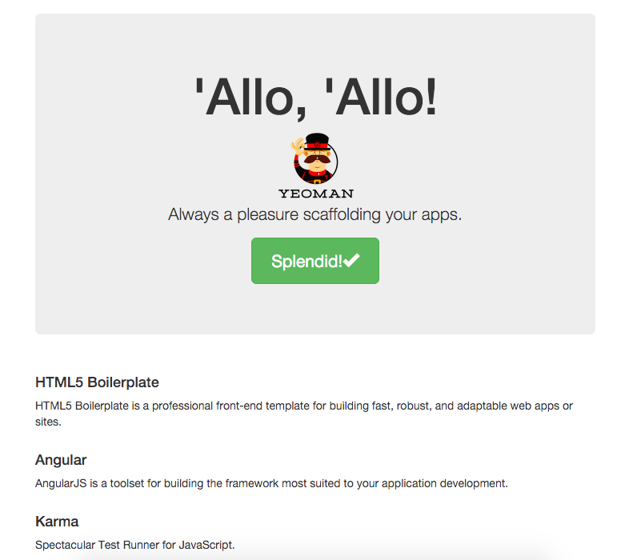
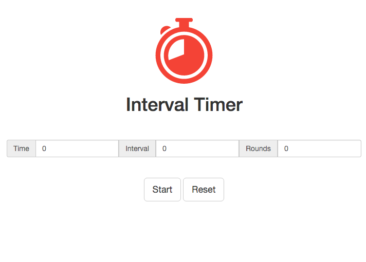

I'm a software developer. I solve problems using software. I'm especially interested in solving problems to make the world better. I write a about technology and my life.
I wanted a interval timer to use when exercising, one that I could set with a time, a rest interval and a number of rounds. I couldn't find one that I liked, so I hacked one together.
It is made in angular using Yeoman's angular generator for scaffolding.
I develop on OSX, so if your using a different OS all of the command line stuff will be different. I use Yeoman for scaffolding the front end of my web projects. I find that this is the quickest way to get a project up and running. Yeoman uses generators to scaffold a project. If you want to use different technologies, use a different generator. In this project I'll be using the angular generator. This will set up npm, Grunt, Bower and a file structure. I would recommend only using this generator for small projects as it does not follow a componentised file structure. I haven't found a generator that is lightweight and follows the componentised best practice that I like yet. The closest one is angular-fullstack but I haven't had an in depth play around with it yet.
First job is to make sure you have npm (Node Package Manager) installed. From this you can then install everything else we will need. The rest, in no particular order are: grunt, grunt-cli (command line), bower, yo, generator-karma (for testing) generator-angular. For installing the generators you can also do this through Yeoman's command line interface.
npm install grunt
npm install grunt-cli
npm install bower
npm install yo
npm install generator-karma
npm install generator-angular
Now we can create the project using Yeoman, I'm calling this project intervalTimer:
yo angular intervalTimer
Yeoman will ask if we want to use Sass, Bootstrap, and some angular modules. Out of these I use Bootstrap and angular-route.js (use the spacebar to select angular modules). After this Yeoman will create everything we need, and set up the dependencies.
Now we can run grunt serve and the Yeoman boilerplate front page will be displayed.
grunt serve

Yeoman gives us a file structure that's perfect for creating a one page app like this one. Our folders are: images - for storing images, scripts - for the Javascript, styles - for the CSS and views - for the html. I have also added an audio folder to hold the audio files.
The index.html page is not something we will be developing. Yeoman uses this to coordinate all of the files used in the site. You will find all of the scripts and style pages being added here. Yeoman starts with some boilerplate code in there which we will remove later.
We will be using views/main.html as our main page. Yeoman also creates an about page by default, but we will be ignoring that. First up, get rid of all of the code in views/main.html . If you have kept grunt serve running then the page opened at http://localhost:9000/#/ will automatically update.
The content from the page is gone, but we still have a header and footer. in index.html there are two tags for the header and the footer.
Remove all of the code inside these tags as well as the tags themselves, if we were creating a site with multiple pages we could put our custom header and footer in here.
We can also remove any auto generated CSS in styles/main.css that refers to the code we have removed (ie all of it), this is good practice, as we are not using this code and there is no point in keeping it.
Finally in scripts/controllers.main.js delete the "this.awesomeThings" object.
Getting rid of this is a bit of a pain, but it's fairly straight forward and still hasn't cost us much time compared to the time that using Yeoman has saved us.
Now we can add in the HTML and CSS to make the site look presentable.
We have two main sections in the HTML, the input/display and the control buttons.
The input/display code, below, has a section for both the input and display. Later we will tie the input/output values, and control for displaying each part to javascript variables.
The control section has buttons that make use of bootstraps inbuilt button styling. We will be tying these up to javascript functions to control the application.
Finally I added a short title and image. I got this image off of a free image hosting site.
The CSS is really small and simple, but spaces things out.
h1{
text-align: center;
}
img{
display: block;
margin: auto;
}
.numbers{
padding-bottom: 40px;
}
.titleBlock{
padding: 40px;
}
.control{
text-align: center;
}
.display{
text-align: center;
}
Throughout this project I use $scope to access the scope. this is a personal preference, there are other schools of thought
Our code will be written into scripts/controller/main.js. First we will need to inject $scope as a dependency. This will allow variables and functions to be accessed by the view.
The variables that need accessing by the view are for getting the inputs from the user,for controlling which parts of the app are displayed at any time, and the empty functions for the buttons to access.
'use strict';
/**
* @ngdoc function
* @name intervalTimerApp.controller:MainCtrl
* @description
* # MainCtrl
* Controller of the intervalTimerApp
*/
angular.module('intervalTimerApp')
.controller('MainCtrl', function ($scope) {
// These variables store the start values
$scope.roundTime = 0;
$scope.intervalTime = 0;
$scope.roundNumber = 0;
//Show/hide variable for buttons
$scope.showStartButton = true;
$scope.showResetButton = true;
$scope.showPauseButton = false;
$scope.showStopButton = false;
$scope.showRestartButton = false;
//Are we getting input or displaying the time
$scope.showDisplay = false;
$scope.showInput = true;
//Calculates the total amount of time to display
$scope.total = function(){
};
///////////// Button functions /////////////
//Function when the start button is pressed
$scope.startButtonPress = function(){
};
//Function when the stop button is pressed
$scope.stopButtonPress = function(){
};
//Function when the pause button is pressed
$scope.pauseButtonPress = function(){
};
//Function for reset button is pressed
$scope.resetButtonPress = function(){
};
//function for restarting the countdown after a pause
$scope.restartButtonPress = function(){
};
///////////// Misc Functions /////////////
$scope.getThisRoundTime = function(){
};
$scope.getThisIntervalTime = function(){
};
$scope.getThisRoundNumber = function(){
};
});
In the HTML we can add in this binding to the Javascript.
Now the countdown display is hidden, as are all of the buttons apart from start and reset. These are the only pieces of functionality that it makes sense to have available at the start. Keeping only the bare minimum on the screen helps point the user in the right direction to use the app.
The main body of the application is the countdown. The logic behind how the countdown works is that we have the time, the interval time and the number of rounds, with each round containing both the time and the interval time. Additionally these need to be counted down in order, time1 followed by interval1, the time2 followed by interval2 etc.
Additionally We want to have a short beep at the end of each time and interval, with a different beep when the entire countdown has ended. I got these beeps from a free sound sample website.
In order to save the user's input the countdown works as continued up separate variables and subtracting the count from the input variables to get the remaining time. Note: there is a default of 1 round, this is more intuitive for a user than having it as a default of 0.
The countdown function looks like this, with associated variables and functions:
//Start time
var startTime = null;
var countdownTimer;
// These varibles are counted down on
var thisRoundTime = 0;
var thisIntervalTime = 0;
var thisRoundNumber = 1;
var timePassed = 0;
//audio
var pointAudioPlayedInRound = false;
var endAudio = new Audio('audio/endBeep.wav');
var pointAudio = new Audio('audio/partBeep.wav');
//the final countdown function
var countDown = function(timePassed){
//counts down one for each millisecond that has passed
for(var i = 0; i < timePassed; i++){
if(thisRoundTime === 0){
if(!pointAudioPlayedInRound){
pointAudioPlayedInRound = true;
playPartAudio();
}
if(thisIntervalTime === 0){
if(pointAudioPlayedInRound){
playPartAudio();
}
//Time is indexed to 0, number of
//times counted indexed to 1
if(thisRoundNumber === 1){
playEndAudio();
endCountDown();
break;
}else{
countDownRound();
}
}else{
countDownInterval();
}
}else{
countDownTime();
}
}
$scope.$apply();
};
//Function when the countdown is finished
var endCountDown = function(){
clearInterval(countdownTimer);
startTime = null;
};
//function for counting down the value of the time
var countDownTime = function(){
thisRoundTime -= 1;
timePassed += 1;
};
//Function for counting down the value of the interval
var countDownInterval = function(){
thisIntervalTime -= 1;
timePassed += 1;
};
// Fucntion for counting down the value of the round
var countDownRound = function(){
thisRoundNumber -= 1;
thisRoundTime = $scope.roundTime * 1000;
thisIntervalTime = $scope.intervalTime * 1000;
timePassed += 1;
pointAudioPlayedInRound = false;
};
///////////// Audio Functions /////////////
var playEndAudio = function(){
endAudio.play();
};
var playPartAudio = function(){
pointAudio.play();
};
There are some peculiarities with the code for which the reasons are not readily apparent. This is due to the way that functions are run in the browser. If we had the function run once a second and countdown one from our timer then there would be some discrepancies with the time. We would have the function set to call back every second, but in actual fact it gets called on a time scale on 0.9-1.1 seconds. This seems like only a minor problem. If the user was to change tab then the time between function calls can be as large as seven seconds.
This is due to how the browser calls functions. It prioritises the currently open tab. So if a user was to switch to a different tab that uses a good amount of processing power, such as watching an instructional video, then the countdown is next to useless.
To solve this we have the function get called up to 200 times a second, and instead of counting down each second it counts down milliseconds. Additionally rather than base the counting on the number of times the function is called we need to store a base time, and count the current time against this.
Now we need to tie the user inputs to the countdown. We will do this in the functions we made earlier for the buttons.
//Calculates the total amount of time to display
$scope.total = function(){
return Math.round((($scope.roundTime / 1000)
+ ($scope.intervalTime / 1000)) * $scope.roundNumber)
- (timePassed / 1000);
};
///////////// Button functions /////////////
//Function when the start button is pressed
$scope.startButtonPress = function(){
//Change Display
$scope.showStartButton = false;
$scope.showResetButton = false;
$scope.showStopButton = true;
$scope.showPauseButton = true;
$scope.showDisplay = true;
$scope.showInput = false;
//Function
thisRoundTime = $scope.roundTime * 1000;
thisIntervalTime = $scope.intervalTime * 1000;
thisRoundNumber = Math.floor($scope.roundNumber);
timePassed = 0;
startCountDown();
};
//Function when the stop button is pressed
$scope.stopButtonPress = function(){
//Change Display
$scope.showStartButton = true;
$scope.showResetButton = true;
$scope.showStopButton = false;
$scope.showPauseButton = false;
$scope.showRestartButton = false;
$scope.showDisplay = false;
$scope.showInput = true;
//Function
endCountDown();
$scope.roundTime = 0;
$scope.intervalTime = 0;
$scope.roundNumber = 1;
timePassed = 0;
};
//Function when the pause button is pressed
$scope.pauseButtonPress = function(){
//Change Display
$scope.showPauseButton = false;
$scope.showRestartButton = true;
//Function
endCountDown();
};
//Function for reset button is pressed
$scope.resetButtonPress = function(){
//Change Display
//Functiom
$scope.roundTime = 0;
$scope.intervalTime = 0;
$scope.roundNumber = 1;
};
//function for restarting the countdown after a pause
$scope.restartButtonPress = function(){
//Change Display
$scope.showPauseButton = true;
$scope.showRestartButton = false;
//Function
startCountDown();
};
$scope.getThisRoundTime = function(){
return Math.round(thisRoundTime / 1000);
};
$scope.getThisIntervalTime = function(){
return Math.round(thisIntervalTime / 1000);
};
$scope.getThisRoundNumber = function(){
// console.log(thisRoundNumber);
return thisRoundNumber;
};
//Function for starting counting functionality
var startCountDown = function(){
//milliseconds since
startTime = Date.now();
//require interval timer for updating the values
countdownTimer = setInterval(findTimePassed, 50);
};
//find the real time passed
//Note this may be a bit off as we are counting seconds
//and not milliseconds.
var findTimePassed = function(){
var thisTime = Date.now();
var timePassed = thisTime - startTime;
startTime = thisTime;
countDown(timePassed);
};
With this the code is complete. You can check out the complete code on my github page. Please get in touch if you have any questions.
Callum